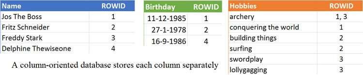

数据库简介
- 数据库(Database，DB)是按照数据结构来组织，存储和管理数据的仓库。
- 典型特征：数据的结构化、数据间的共享、减少数据的冗余度，数据的独立性。
- 关系型数据库：指采用了关系模型来组织数据的数据库。
关系模型指的就是二维表格模型，而一个关系型数据库就是由二维表及其之间的联系所组成的一个数据组织。 - 非关系型数据库：指非关系型的，分布式的，且一般不保证遵循
ACID原则的数据存储系统。
关系数据库
关系模型常用概念
- 关系：一张二维表，每个关系都具有一个关系名，也就是表名
- 元组：二维表中的一行，在数据库中被称为记录
- 属性：二维表中的一列，在数据库中被称为字段
- 域：属性的取值范围，也就是数据库中某一列的取值限制
- 关键字：一组可以唯一标识元组的属性，数据库中常称为主键，由一个或多个列组成
- 关系模式：指对关系的描述。其格式为：关系名(属性1，属性2， … … ，属性N)，在数据库中成为表结构
主流的关系型数据库
Oracle，Microsoft SQL Server，MySQL，PostgreSQL，DB2，
Microsoft Access， SQLite，Teradata，MariaDB(MySQL的一个分支)，SAP
关系型数据库的优点
- 容易理解：二维表结构是非常贴近逻辑世界的一个概念，关系模型相对网状、层次等其他模型来说更容易理解
- 使用方便：通用的SQL语言使得操作关系型数据库非常方便
- 易于维护：丰富的完整性(实体完整性、参照完整性和用户定义的完整性)大大减低了数据冗余和数据不一致的概率
- 复杂操作：支持SQL，可用于一个表以及多个表之间非常复杂的查询。
关系型数据库的缺点
- 高并发读写需求：网站的用户并发性非常高，往往达到每秒上万次读写请求，对于传统关系型数据库来说，硬盘
I/O是一个很大的瓶颈 - 固定的表结构，灵活度稍欠
- 读写性能比较差：网站每天产生的数据量是巨大的，对于关系型数据库来说，在一张包含海量数据的表中查询，效率是非常低的
- 在基于web的结构当中，数据库是最难进行横向扩展的，当一个应用系统的用户量和访问量与日俱增的时候，数据库却没有办法像
web server和app server那样简单的通过添加更多的硬件和服务节点来扩展性能和负载能力。当需要对数据库系统进行升级和扩展时，往往需要停机维护和数据迁移。 - 性能欠佳：在关系型数据库中，导致性能欠佳的最主要原因是多表的关联查询，以及复杂的数据分析类型的复杂SQL报表查询。为了保证数据库的ACID特性，必须尽量按照其要求的范式进行设计，关系型数据库中的表都是存储一个格式化的数据结构。
数据库事务必须具备ACID特性，ACID分别是Atomic原子性，Consistency一致性，Isolation隔离性Durability持久性。
非关系型数据库（NoSql）
非关系型数据库结构
非关系型数据库以键值对存储，且结构不固定，每一个元组可以有不一样的字段，每个元组可以根据需要增加一些自己的键值对，不局限于固定的结构，可以减少一些时间和空间的开销。
非关系型数据库得分类
非关系型数据库都是针对某些特定的应用需求出现的，因此，对于该类应用，具有极高的性能。依据结构化方法以及应用场合的不同，主要分为以下几类：
key-value：
key-value数据库的主要特点是具有极高的并发读写性能Key-value数据库是一种以键值对存储数据的一种数据库，类似Java中的map。可以将整个数据库理解为一个大的map，每个键都会对应一个唯一的值。- 主流代表为Redis， Amazon DynamoDB， Memcached，
Microsoft Azure Cosmos DB和Hazelcast - 典型应用场景：内容缓存，主要用于处理大量数据的高访问负载，也用于一些日志系统等
- 数据模型：Key指向Valeue得键值对，通常用hash table来实现
- 强项：查找速度快
- 弱项：数据无结构化，通常只能被当作字符串或者二进制数据
文档型数据库：
- 这类数据库的主要特点是在海量的数据中可以快速的查询数据
- 文档存储通常使用内部表示法，可以直接在应用程序中处理，主要是
JSON。JSON文档也可以作为纯文本存储在键值存储或关系数据库系统中。 - 主流代表为MongoDB，Amazon DynamoDB，Couchbase，Microsoft Azure Cosmos DB和CouchDB
- 典型应用场景：Web应用
- 数据模型：Key-Value对应的键值对，Value为结构化数据
- 强项：数据结构要求不严格，表结构可变，不需要像关系型数据库一样需要预先定义表结构
- 弱项：查询性能不高，缺乏统一查询语法
图形数据库：
- 主流代表：Neo4J，InfoGrid，Infinite Graph
- 典型应用场景：社交网络，推荐系统等。构建关系图谱
- 数据模型：图结构
- 强项：利用图结构相关算法，比如最短路径寻址，N度关系查栈等
- 弱项：很多需要对整个图做计算才能得出需要的信息，并且不好做分布式集群方案
列式数据库：
- 这类数据库的主要特点是具有很强的可拓展性
- 普通的关系型数据库都是以行为单位来存储数据的，擅长以行为单位的读入处理，比如特定条件数据的获取。因此，关系型数据库也被成为面向行的数据库。相反，面向列的数据库是以列为单位来存储数据的，擅长以列为单位读入数据。这类数据库想解决的问题就是传统数据库存在可扩展性上的缺陷，这类数据库可以适应数据量的增加以及数据结构的变化，将数据存储在记录中，能够容纳大量动态列。由于列名和记录键不是固定的，并且由于记录可能有数十亿列，因此可扩展性存储可以看作是二维键值存储。
- 主流代表为Cassandra，HBase，Microsoft Azure Cosmos DB，Datastax Enterprise和Accumulo
- 典型应用场景：分布式得文件系统
- 数据模型：以列簇式存储，将同一列数据存在一起
- 强项：查找速度快，可扩展性强，更容易进行分布式扩展
- 弱项：功能相对局限
- 
非关系型数据库的优点
- 格式灵活：用户可以根据需要去添加自己需要的字段，为了获取用户的不同信息，不像关系型数据库中，要对多表进行关联查询。仅需要根据
id取出相应的value就可以完成查询。 - 速度快：nosql可以使用硬盘或者随机存储器作为载体，而关系型数据库只能使用硬盘；
- 适用于
SNS(Social Networking Services)中，例如facebook，微博。系统的升级，功能的增加，往往意味着数据结构巨大变动，这一点关系型数据库难以应付，需要新的结构化数据存储。由于不可能用一种数据结构化存储应付所有的新的需求，因此，非关系型数据库严格上不是一种数据库，应该是一种数据结构化存储方法的集合。
非关系型数据库得不足
只适合存储一些较为简单的数据，对于需要进行较复杂查询的数据，关系型数据库显的更为合适。不适合持久存储海量数据；无事务处理
转载请注明来源，欢迎对文章中的引用来源进行考证，欢迎指出任何有错误或不够清晰的表达。可以在下面评论区评论，也可以邮件至 1589631311@qq.com